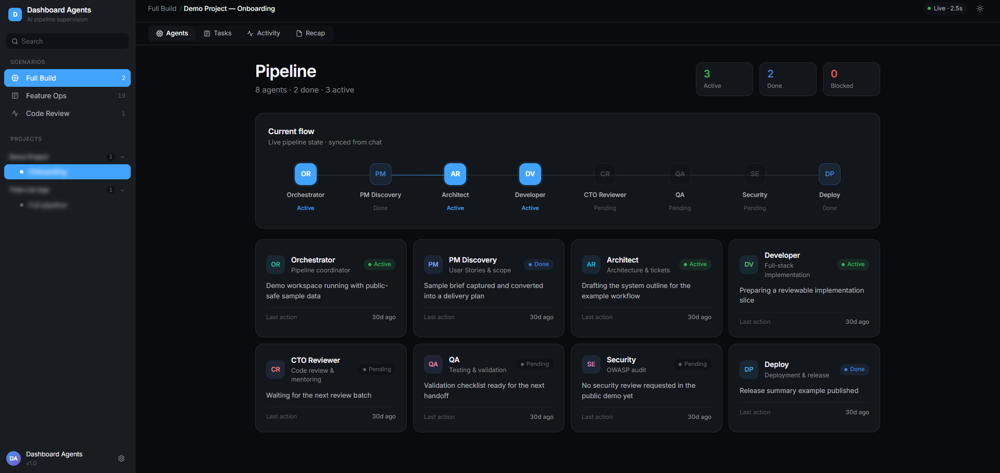

Cadrer la portée du module
Accès anticipé · Lancement québécois
Faites livrer votre agent IA comme une vraie équipe.
Codaxia Agent Team transforme Claude Code, Codex ou Cursor en équipe structurée — Orchestrateur, PM, Architecte, Dev, Reviewer, QA, Sécurité, Déploiement. Vous voyez ce qui avance, ce qui bloque, et ce qui est livré.
Prix public prévu : 1 500 $ CAD. Inclut 1 h d'installation guidée, 4 suivis de 15 min, et 6 mois de mises à jour.
- Remboursement 14 jours
- Aucune télémétrie
- Code source fourni
Implémenter TOTP + codes de secours
Validation CTO
QA a ajouté ses notes de validation au recap.
Compatible avec
- Claude Code
- Codex
- Cursor
- tout assistant qui lit un fichier et appelle une API locale
Le problème
L'IA code vite. Mais vous perdez la trace de ce qu'elle fait.
Aucun pipeline visible
Tout se passe dans un terminal ou un chat. Vous n'avez pas de vue d'ensemble sur ce qui est cadré, codé, reviewé et validé.
Les rôles se mélangent
L'assistant joue tour à tour le développeur, le reviewer, le QA, l'architecte. Mais sans transition explicite, c'est impossible à auditer.
Difficile à expliquer au client
Pour un client, un coéquipier, ou votre vous du futur : retracer ce qui a été décidé et pourquoi prend trop de temps.
Avant / Après
De la console floue à la livraison structurée.
Sans Codaxia Agent Team
$ claude > refacto le module auth working... edited 14 files done. > ? > tests passent ? > security check ? > ...
- Pas de pipeline visible
- Pas de trace des décisions
- Aucun livrable client
Avec Codaxia Agent Team
✓ Architecte — découpage validé
✓ Developer — TOTP + backup codes
● CTO Reviewer — en cours
○ QA — en attente
○ Security — OWASP
- Pipeline et statut de chaque rôle
- Journal complet des décisions
- Recap mission prêt à envoyer au client
Comment ça marche
Trois étapes. Aucun nouveau workflow à apprendre.
L'assistant lit un protocole, joue les bons rôles, crée les tâches, et met à jour le tableau de bord local pendant qu'il travaille. Vous gardez exactement votre IA et votre abonnement actuel.
1
Ouvrez votre projet dans Claude Code, Codex, Cursor ou un autre assistant compatible.
2
Demandez-lui de démarrer la mission. Il lit le protocole et active les bons agents.
3
Suivez le tableau de bord local. Agents, tâches, activité, recap — tout en temps réel.
Le produit
Quatre vues, une seule mission.
Chaque mission a son tableau de bord avec quatre onglets liés. Vous voyez l'IA travailler comme vous regarderiez une équipe humaine livrer.
OROrchestrateurTerminé
DVDeveloperTerminé
CRCTO ReviewerEn cours
QAQualityEn attente
Agents
Pipeline visuel. Statut de chaque rôle, dernière action effectuée, prochain agent à activer.
Backlog
Scope module auth
En cours
TOTP impl.
Backup codes
Review
Refacto guards
QA
Tests E2E
Tâches
Kanban Backlog → En cours → Review → QA → Done. Avec critères d'acceptation, priorité et historique.
DV
A créé 3 fichiers dans app/Auth/
CR
A relevé 2 commentaires bloquants
QA
A validé le scénario "Login + 2FA"
OR
Mission close — recap publié
Activité
Journal chronologique de toutes les actions. Filtrable par agent. Auditable, exportable.
Mission · Module 2FA
Pourquoi Sécuriser l'accès admin avant prod.
Comment TOTP + 8 backup codes hashés.
Résultat 14 fichiers, 6 tests, 0 vuln OWASP.
✓ Prêt à envoyer au clientRecap
Synthèse finale : pourquoi, comment, résultat, et un guide de test pas-à-pas. À envoyer au client tel quel.
Aperçu réel
Le produit, sans maquette.
Capture du tableau de bord pendant une mission Full Build : 8 agents, 3 actifs, pipeline visible. C'est ce que vous voyez dès que votre IA commence à travailler.

Local-first par design
Aucun compte SaaS. Aucune télémétrie. Aucune facture API en plus.
Codaxia Agent Team tourne sur votre machine. Il s'appuie sur l'assistant IA que vous payez déjà et stocke l'état des missions en local, dans des fichiers que vous pouvez ouvrir.
Aucun cloud requis
Aucune activation en ligne
Aucun serveur de licence
Aucune télémétrie
Aucun frais d'API additionnel
Auto-hébergé et inspectable
Cas d'usage concrets
Pour ceux qui livrent, pas seulement ceux qui codent.
Freelance
Module Laravel pour un client
Vous livrez un module 2FA. À la fin, vous envoyez un Recap mission au client : pourquoi, comment, résultat, tests. Sans rédiger un seul mot de doc.
CTO fractionnel
Audit d'un codebase startup
Scénario code-review. Le pipeline active CTO Reviewer + Security. Le rapport sort en activité tracée et en recap signé.
Petite agence
Quatre missions en parallèle
Quatre projets dans la sidebar. Quatre pipelines visibles en même temps. Vous savez en 5 secondes lequel attend une décision humaine.
Ce que vous récupérez
Du temps. De la traçabilité. Un livrable.
~30 min
de doc évitées par mission. Le Recap remplace votre compte-rendu manuel.
0 réunion
pour expliquer où ça en est. Le client regarde l'activité ou reçoit le recap.
8 rôles
réutilisables sur chaque mission. Pas de re-briefing entre projets.
Accès anticipé
500 $ aujourd'hui. 1 500 $ au prix public.
L'accès anticipé s'adresse aux premiers utilisateurs qui veulent l'outil maintenant, contribuer aux retours qui façonnent la V1, et bénéficier des mises à jour pendant six mois.
8 / 25 places attribuées · accès anticipé limité
Codaxia Agent Team · Accès anticipé
500$ CAD
Prix public prévu : 1 500 $
- Licence commerciale Accès anticipé
- Logiciel actuel — livraison locale
- Guide d'installation assistée par IA
- 1 h d'installation et de démarrage
- 4 suivis de 15 minutes
- 6 mois de mises à jour incluses
- Canal de feedback prioritaire
Paiement sécurisé Stripe · Livraison après confirmation · Remboursement 14 jours
Pour qui c'est
- Solo développeur qui utilise déjà Claude Code, Codex ou Cursor
- Consultant tech ou CTO fractionnel qui livre à des clients
- Petite agence qui veut un livrable client structuré
- Équipe qui veut un processus visible autour de son IA
Pour qui ce n'est pas
- Une plateforme SaaS hébergée avec comptes et permissions
- Un runtime d'agents 100 % autonomes
- Une suite entreprise avec SSO, rôles admin, audit logs
- Un service cloud qui remplace votre assistant IA
Démo complète
Voir le produit en action.
Une démonstration de 8 minutes : install, première mission, pipeline complet, recap final.
L'équipe
Pourquoi j'ai construit ça.
J'utilise Claude Code et d'autres assistants IA tous les jours sur mes projets de consultation. Le problème : impossible de montrer à un client ce qui a été décidé, ni de garder la trace propre d'une mission. J'ai construit Codaxia Agent Team pour mon propre usage. Aujourd'hui je le rends disponible à un petit nombre d'utilisateurs en accès anticipé.
— Xavier, fondateur de Codaxia
FAQ
Questions fréquentes
Est-ce que c'est un SaaS ?
Non. Codaxia Agent Team est un produit local-first. Il tourne sur votre machine et stocke ses données dans des fichiers locaux. Aucun compte, aucune connexion requise après l'installation.
Ai-je besoin d'une clé API OpenAI ou Anthropic ?
Non. Le tableau de bord lui-même n'appelle aucune API IA. Vous utilisez votre abonnement existant à Claude Code, Codex ou Cursor — Codaxia Agent Team ne fait que les superviser et afficher leur travail.
Mon assistant IA n'est pas Claude Code, est-ce que ça marche ?
Oui, tant qu'il peut lire un fichier .md et appeler une API HTTP locale. Tout le protocole est dans AGENTS.md, donc l'outil est compatible avec Claude Code, Codex, Cursor, et tout assistant équivalent.
Compatible Windows / Mac / Linux ?
Oui les trois. Node.js 18+ est le seul prérequis. L'installation guidée par IA prend en général 5 à 10 minutes et fonctionne identiquement sur les trois plateformes.
Le code source est-il fourni ?
Oui. Vous recevez le repo complet sous licence commerciale. Vous pouvez modifier le code pour votre usage interne, créer vos propres agents, adapter le protocole à votre stack.
Puis-je personnaliser les agents ?
Oui. Les rôles d'agents sont des fichiers markdown dans agents/default/. Vous pouvez les modifier, en ajouter des nouveaux, ou créer des "skills" spécifiques par projet (Laravel, React, etc.).
Pourquoi l'accès anticipé est-il moins cher ?
Vous obtenez la version 1.0 commerciale, pleinement utilisable aujourd'hui. Le tarif réduit reflète votre statut d'early adopter qui contribue à façonner la roadmap, pas un produit incomplet.
Que se passe-t-il après 6 mois ?
Votre copie installée continue de fonctionner indéfiniment. Aucun kill switch. Les nouvelles versions au-delà de 6 mois nécessitent un renouvellement.
Puis-je obtenir un remboursement ?
Oui. Remboursement intégral sous 14 jours si le produit ne s'installe pas ou ne correspond pas à ce qui est documenté dans l'offre.
Pas prêt à acheter ?
Recevez la démo et le guide d'installation.
Un courriel, deux liens : la démo vidéo et le guide complet de mise en place. Aucun spam, aucune relance commerciale automatique.
ou réservez un appel de 15 min directement avec Xavier.
Accès anticipé limité
Démarrez votre première mission supervisée.
Le logiciel actuel, l'installation guidée, les suivis, et 6 mois de mises à jour.
Obtenir l'accès anticipé · 500 $Prix public prévu : 1 500 $ · Remboursement 14 jours